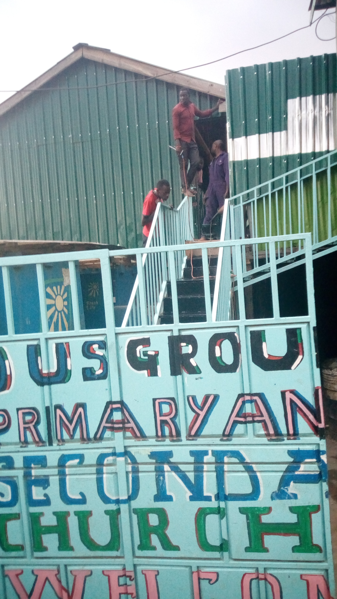
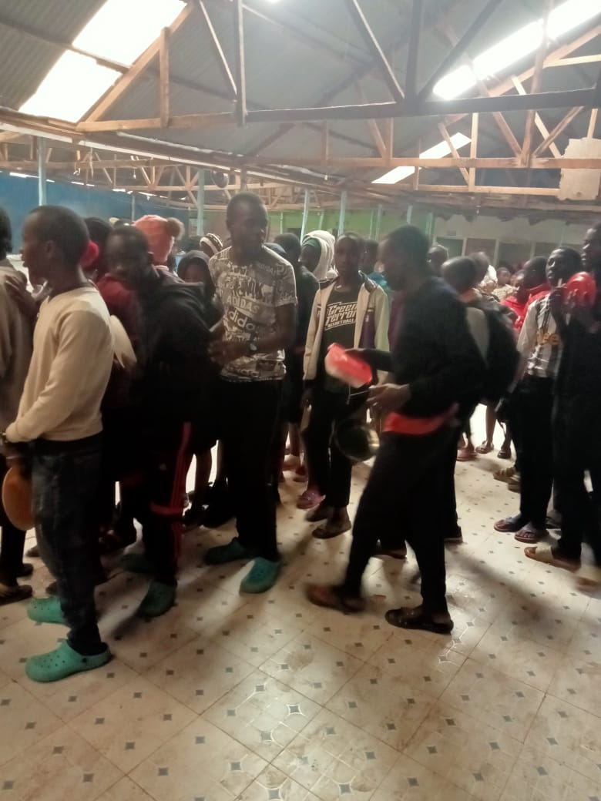
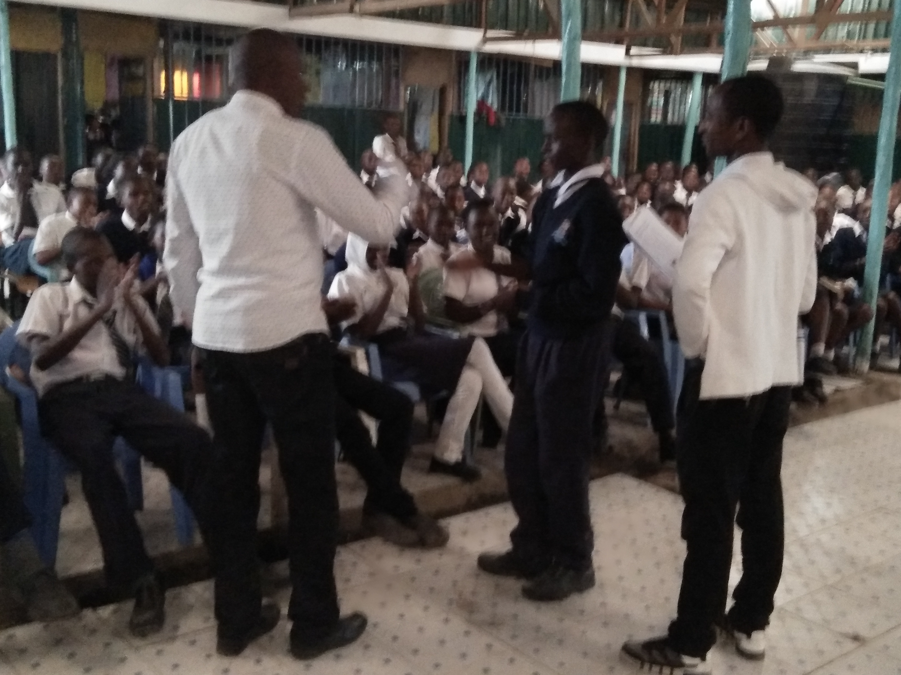

Healthcare Outreach
Improving Health, Building Hope, Transforming Communities

Our Healthcare Mission
Project Restore Hope's healthcare outreach efforts are rooted in the medical mission work that first brought Dr. Mitchelle Scott to Mukuru, Kenya.
In 2006, Dr. Scott participated in a medical mission trip that exposed the urgent healthcare challenges facing families living in the Mukuru slums. During this experience, she witnessed the realities of poverty, limited access to healthcare, and the struggles faced by vulnerable children and families. This journey ultimately inspired the founding and long-term support of Project Restore Hope.
Today, healthcare outreach remains an important part of our commitment to community well-being. We seek to promote healthier lives through education, awareness, partnerships, and support initiatives that strengthen families and improve quality of life.
Our Areas of Focus

Community Health Education
Providing educational resources that help individuals and families make informed health decisions.

Preventive Healthcare Awareness
Promoting awareness of healthy lifestyles, disease prevention, early detection, and wellness practices.

Medical Mission Partnerships
Supporting partnerships that connect communities with healthcare professionals, educational resources, and outreach opportunities.
Health Screenings & Referrals
Helping connect individuals with appropriate healthcare services and educational resources when available.

Child Wellness Support
Supporting the physical well-being of children so they can learn, grow, and thrive.

Hygiene & Sanitation Education
Encouraging healthy practices that contribute to safer and healthier communities.

Support for Vulnerable Families
Providing information, resources, and outreach initiatives that strengthen families facing significant challenges.

Community Health Outreach Events
Participating in programs and activities that promote health awareness and education throughout the community.
Our Goal
We aim to promote healthier communities by connecting families with healthcare resources, increasing health awareness, and supporting initiatives that improve the overall well-being of children and families in Mukuru.
Healthy children are better able to attend school, succeed academically, and pursue opportunities that can transform their futures.

Digital Health Education & Outreach Initiative
Creating Skills, Opportunities, and Community Impact

One exciting opportunity we are exploring is empowering students and community members to develop responsible digital communication and outreach skills through educational healthcare awareness initiatives.
Participants may assist in sharing educational health content across social media platforms such as Facebook, Instagram, and other relevant online communities. This initiative is designed to provide practical experience in digital marketing, content management, online engagement, and health education outreach.
The initiative is inspired by the educational work of Dr. Mitchelle Scott and may include engagement with platforms such as Prevent Cancer Now, DocScottMD – Stop Cancer Now, educational resources available through DocScottMD.com, and relevant cancer support and health education communities.
Student Learning Opportunities
Social Media Management
Hands-on experience managing educational health content across social platforms.
Digital Communications
Developing skills in online messaging, audience engagement, and content strategy.
Content Curation
Learning to select, organize, and share credible health education materials.
Online Community Engagement
Building and nurturing online communities focused on health and wellness.
Health Education Campaigns
Creating awareness campaigns that promote preventive care and healthy living.
Public Health Communication
Understanding best practices for sharing health information responsibly and ethically.
Community Impact
Many online health communities actively seek credible educational information and alternative perspectives regarding health, wellness, cancer prevention, and integrative healthcare approaches.
Students and community members may help connect interested individuals with educational resources while developing valuable workforce skills that can support future employment opportunities.
This initiative aligns with Project Restore Hope's broader vision of creating sustainable economic opportunities through technology, internet connectivity, and digital skills development.
Economic Empowerment Opportunity
As part of this initiative, Dr. Mitchelle Scott intends to create meaningful economic opportunities for qualified participants through referral-based outreach activities.
Referral Compensation
$50
for each qualified referral that results in a scheduled patient consultation with DocScottMD.
Skills Development
Gain practical digital skills in social media, content management, and health education outreach while creating pathways for responsible income generation.
Learn More
Visitors interested in learning more about Dr. Mitchelle Scott's medical work and educational resources may access the following platforms:
DocScottMD – Stop Cancer Now
Resources and information on cancer awareness and prevention.
Learn MoreLooking Toward the Future
Our vision extends beyond traditional outreach programs. By combining education, technology, digital communication, and community engagement, we hope to equip students and community members with valuable skills that can create new opportunities for learning, service, and economic empowerment.
Together, we are building healthier communities, stronger futures, and greater opportunities for the next generation.

Support Health and Hope in Mukuru
Your generosity helps us build healthier communities and brighter futures for children and families.